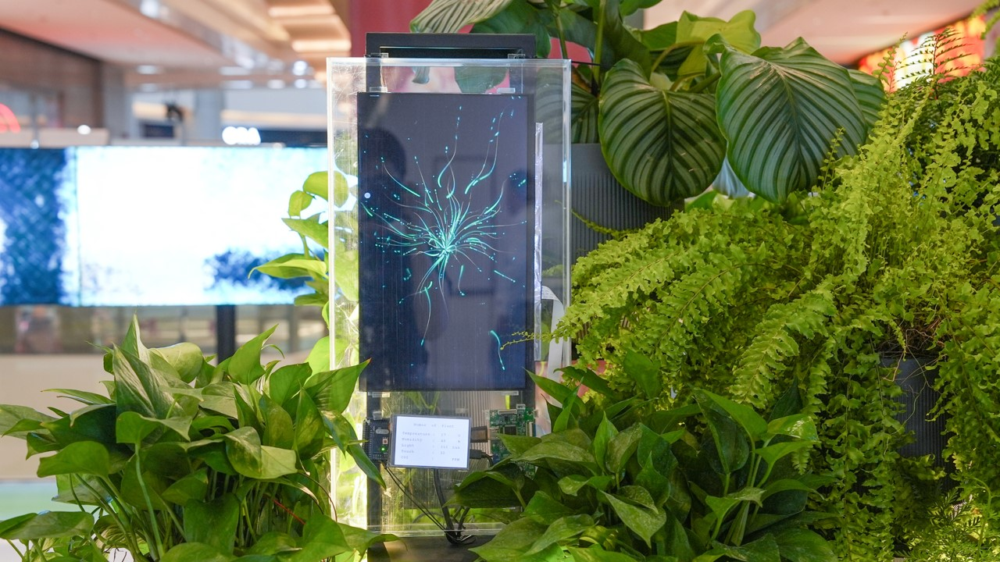
Plant System
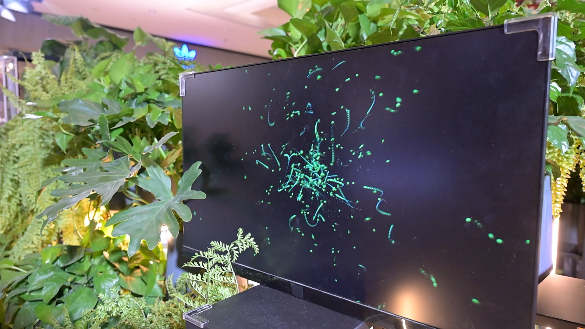
Sociality and Modes of Communication
Plant System is a cross-media interactive installation that explores the ways in which sociality and communication occur in the ecology of plants.
In the plant world, there are mechanisms of kinship recognition whereby plants can transmit signals to each other and recognise similar genotypes. The root system of plants, like a kind of intelligent network, is one of the ways in which they transmit information.
This transmission involves the recognition of self and non-self, and determines whether plants compete or cooperate. The intervention of alien species can also lead to the transfer of information between animals and plants.
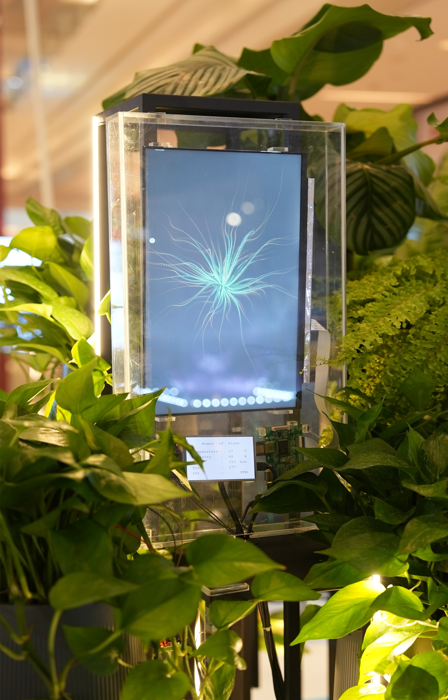
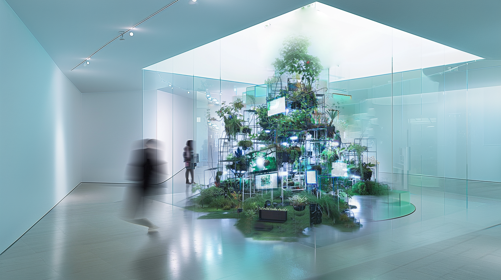
Family-related Behaviour
By simulating the interaction of root systems between plants, the work attempts to reveal the characteristics of plant sociality, especially kinship behaviour. Viewers will experience first-hand the ways in which plants communicate with each other, understand the blurred lines between self and not-self, and reflect on the ways in which invasive species can alter the dynamics of entire ecosystems.
Linking the communicability of plants to their social nature provides viewers with a unique perspective and encourages them to rethink our connection to the natural world. More than just a work of art, Plant System is a medium that calls attention to the social and ecological balance of plants — it asks viewers to look at the plant world in a new way and realise the subtle, deep connection between us and the natural world.

The work invites visitors to step into the role of an outsider entering an ecosystem of plants — to observe what happens when their own presence becomes another signal in the network.
Each module pairs a living plant with a screen that visualizes the plant's real-time response. As visitors approach, lean in, or touch nearby surfaces, the visualizations shift — what was an isolated organism becomes part of a community in negotiation.
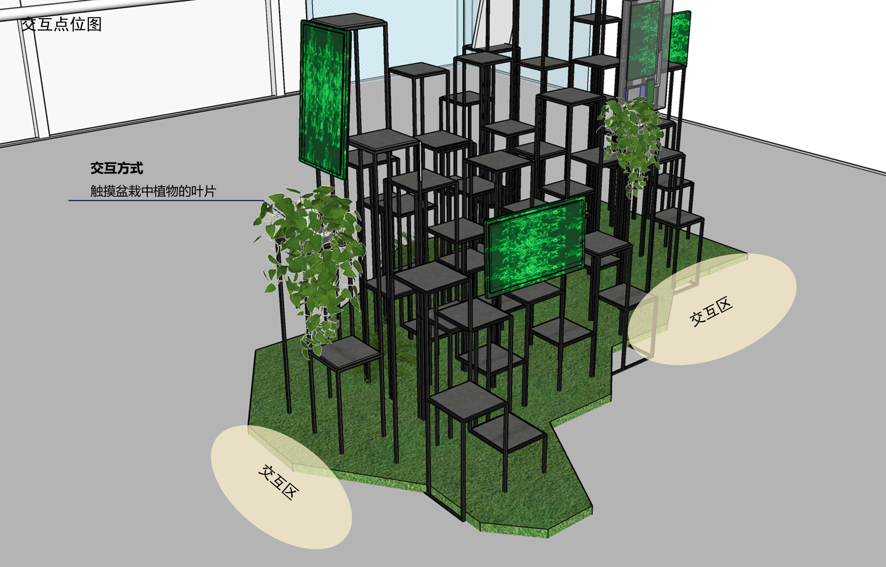
Reflections on Plant Sociality
Throughout the development of this work, a series of questions emerged — questions about how we make sense of plant communication, kinship, and the ethics of treating plants as social agents:
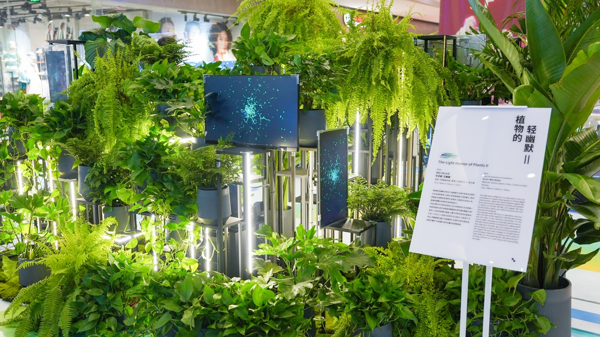
The work has been exhibited as both a stand-alone immersive installation and as part of broader plant-art research showcases — each iteration tuning the spatial layout and the density of modules to the unique character of the room.
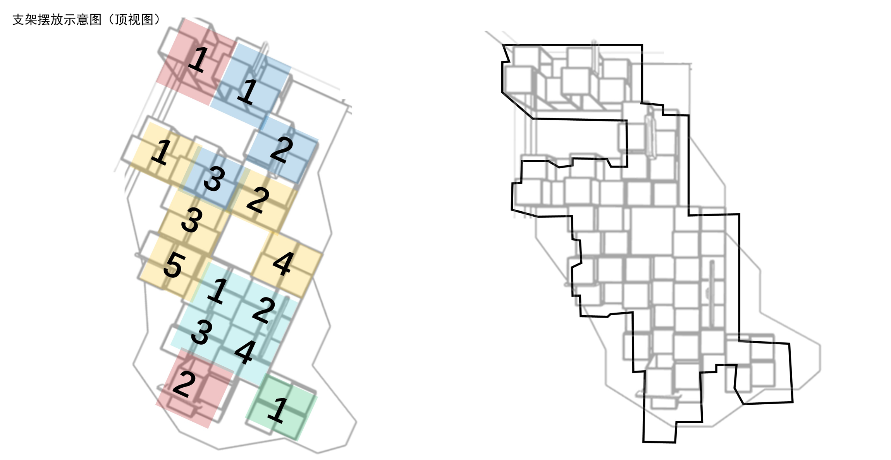
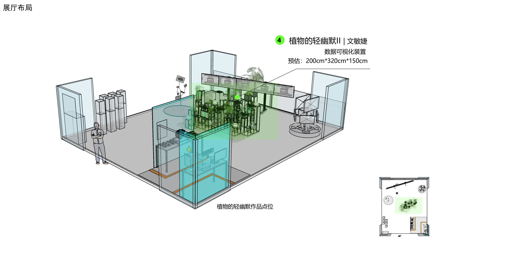
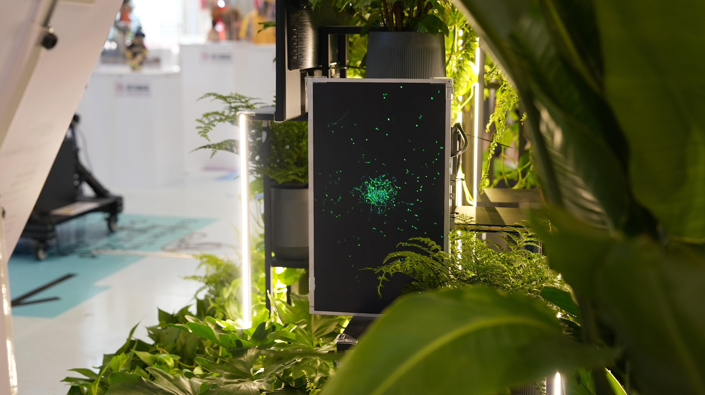
Construction & Spatial Design
The modular structure was designed to scale from intimate single-cell encounters to room-sized installations. Each unit acts as both a habitat for a plant and a vessel for the screen that interprets it.
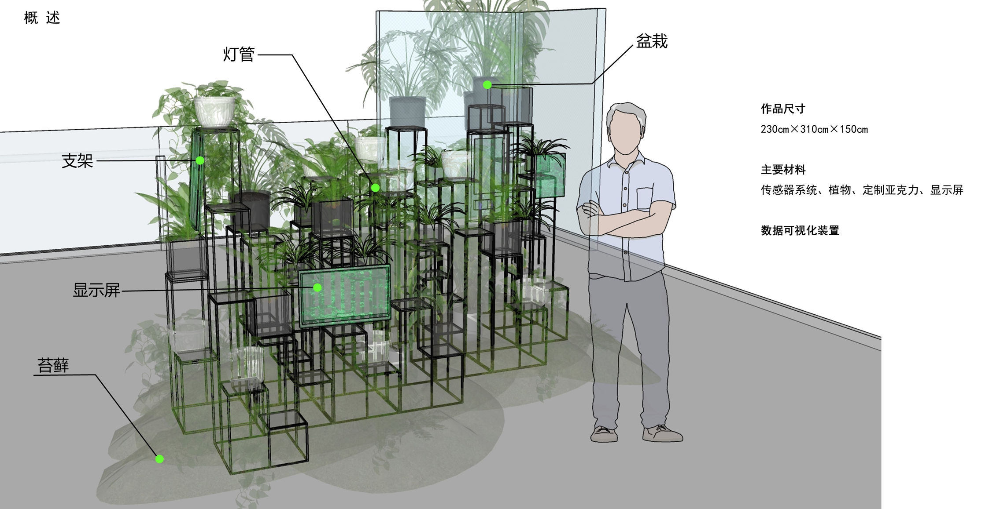
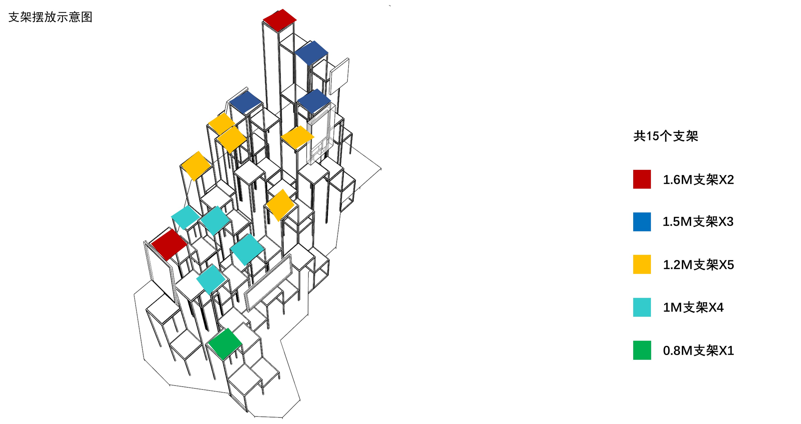
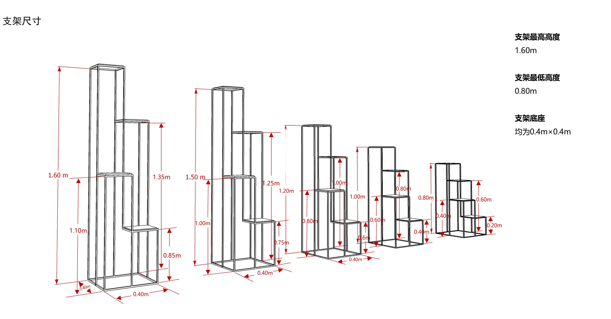
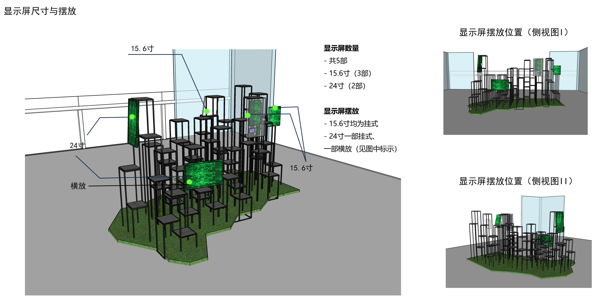
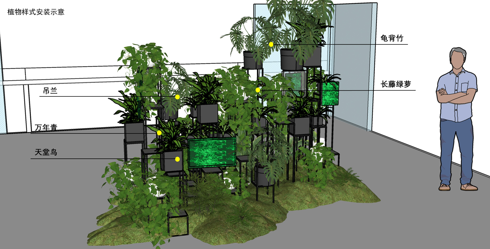
Back to Plants, Getting to Know Plants
My utmost hope is that during "communication," participants will experience not only sensory feedback involving touch, hearing, and vision but will also foster accurate emotional exchange. This will lead to the realization that plants possess "intelligence" and "emotion."